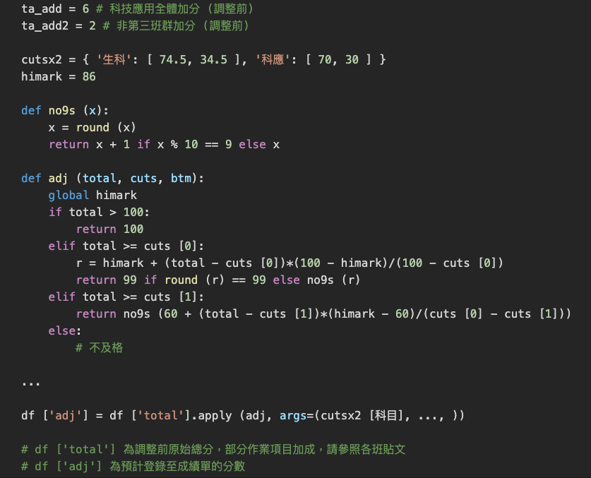

<!DOCTYPE html>
<html lang="en">
<head>
    <meta charset="UTF-8">
    <meta name="viewport" content="width=device-width, initial-scale=1.0">
    <title>黃老師科技課程</title>
    <!-- 客製化Bootstrap CSS -->
    <link rel="stylesheet" href="./css/bootstrap.css">
    <!-- 使用font awesome -->
    <link rel="stylesheet" href="https://use.fontawesome.com/releases/v5.1.0/css/all.css"
        integrity="sha384-lKuwvrZot6UHsBSfcMvOkWwlCMgc0TaWr+30HWe3a4ltaBwTZhyTEggF5tJv8tbt" crossorigin="anonymous">
    <!-- 使用style.css -->
    <link rel="stylesheet" href="./css/style.css">
    <!-- 修改樣式：用自己的css覆蓋(需要針對點擊、啟動、指向等各種不同狀態都要改寫，較麻煩)/改寫引用的css(主要在_variables.scss裡) -->
    
</head>
<body>
    <!-- navbar -->
    <nav class="navbar navbar-expand-sm navbar-light bg-primary fixed-top">
        <a class="navbar-brand text" href="#header">黃老師科技課程</a>
        <button class="navbar-toggler d-lg-none" type="button" data-toggle="collapse" data-target="#collapsibleNavId"
            aria-controls="collapsibleNavId" aria-expanded="false" aria-label="Toggle navigation">
            <span class="navbar-toggler-icon"></span>
        </button>
        <div class="collapse navbar-collapse" id="collapsibleNavId">
            <ul class="navbar-nav mr-auto">
                <li class="nav-item">
                    <a class="nav-link" href="#intro">公告</a>
                </li>
                <li class="nav-item">
                    <a class="nav-link" href="#homework">作業與成績</a>
                </li>
                <li class="nav-item">
                    <a class="nav-link" href="#regulations">上課規範</a>
                </li>
                <li class="nav-item">
                    <a class="nav-link" href="#footer">常用連結</a>
                </li>
            </ul>
        </div>
    </nav>
    <!-- navbar end -->
    <!-- header -->
    <header id="header" class="jumbotron text-center text-white bg-dark">
        <div class="container">
            <h1>黃老師科技課程</h1>
            <p>
                請詳細閱讀以下每一條說明，如果有違反規定的會扣分和請你做愛校服務。
                <br>
                防疫期間，線上正常上課。
            </p>
        </div>
    </header>
    <!-- header end -->
    <!-- intro -->
    <section id="intro" class="py-5">
        <div class="container">
            <div id="carouselExampleSlidesOnly" class="carousel slide" data-ride="carousel" data-interval="5000">
                <div class="carousel-inner">
                  <div class="carousel-item active">
                    <div class="alert alert-danger" role="alert">
                        上課全程口罩戴好戴滿。
                    </div>
                  </div>
                  <div class="carousel-item">
                    <div class="alert alert-danger" role="alert">
                        疫情嚴峻，請密切注意 Google Classroom 貼文和課程首頁更新。
                    </div>
                  </div>
                  <div class="carousel-item">
                    <div class="alert alert-danger" role="alert">
                        平時勤洗手，不碰眼鼻口，注意個人衛生，不要共飲、共食。
                    </div>
                  </div>
                  <div class="carousel-item">
                    <div class="alert alert-danger" role="alert">
                        這學期上課週數較上學期少近一個月，請儘速入座，方能儘早開始上課。請不要遲到，每節課我們準時開始。
                    </div>
                  </div>
                  
              </div>
        </div>
        <!-- <h1 class="section-title text-center text-secondary mb-5">Lorem, ipsum.</h1> -->
        <br>
        <div class="container text-center">
            <!-- 修正排版為三項排一排 -->
            <div class="row"><!-- 史上層元具有flex特性 -- row -->
                <div class="col-md-4"><!-- 寬4grid (切成三等份) -->
                    <a href="https://drive.google.com/drive/folders/1LX-BaCLdZeIBSDFjDGCfqql49C7SnKcy?usp=sharing%22" class="nav-link">
                        <div class="intro-box">
                            <div class="icon text-primary py-3">
                                <i class="fas fa-folder fa-5x" aria-hidden="true"></i>
                                <!-- <i class="fas fa-paper-plane fa-5x a" aria-hidden="true"></i> -->
                            </div>
                            <br>
                            <h3 class="text-secondary">課程錄影資料夾</h3>
                            <div class="intro-line bg-primary"></div>
                            <p class="text-dark"><br></p>
                        </div>
                    </a>  
                </div>
                <div class="col-md-4">
                    <a href="https://www.youtube.com/watch?v=OnWNtD5uTso" class="nav-link">
                        <div class="intro-box">
                            <div class="icon text-primary py-3">
                                <i class="fas fa-file-video fa-5x" aria-hidden="true"></i>
                            </div>
                            <br>
                            <h3 class="text-secondary">無症狀感染</h3>
                            <div class="intro-line bg-primary"></div>
                            <p class="text-dark">credit: 李四端的雲端世界</p> 
                        </div>
                    </a>
                </div>
                <div class = col-md-4>
                    <a href="https://nandemoi.github.io/gc_hw.pdf" class="nav-link">
                        <div class="intro-box">
                            <div class="icon text-primary py-3">
                                <i class="fas fa-file-pdf fa-5x" aria-hidden="true"></i>
                            </div>
                            <br>
                            <h3 class="text-secondary">作業繳交說明</h3>
                            <div class="intro-line bg-primary"></div>
                            <p class="text-dark"><br></p>
                        </div>
                    </a>
                </div>
            </div>
        </div>
    </section>
    <!-- intro end -->
    <!-- homeworks -->
    <section id="homework" class="py-5 bg-secondary text-white">
        <h1 class="section-title text-center mb-5">作業</h1>
        <div class="container">
            <div class="alert alert-danger" role="alert">
                作業繳交形式項目等規定請看清楚上面連結以及講義個別的內容，不符合規定者扣分或不予計分。
            </div>
            <div>
                以下重申：作業一定要自己做！ <br>
                看到太像的作業會另外找時間請你們個別來考試，同樣的內容考過才會給分；如果是已經改過發還的，分數會拿回來。<br>
                很多作業是開放式的、軟性的、沒有硬性的標準答案的，這些幾乎是送分，請大家好好把握。
            </div>
            <br>
            <nav class="nav nav-pills mt-3">
                <a data-toggle="tab" class="nav-link active" href="#article6">會重看的作業</a>
                <a data-toggle="tab" class="nav-link" href="#article7">學期成績計算說明</a>
                <a data-toggle="tab" class="nav-link" href="#article3">成績補充說明</a>
                <a data-toggle="tab" class="nav-link" href="#article4">作業補充說明</a>
                <!-- disabled tabs -->
                <a data-toggle="tab" class="nav-link disabled" href="#article5">預計改作業順序</a>
                <!-- 在a標籤中href可以用作data-target -->
            </nav>
            <div class="tab-content">
                <article id="article3" class="my-3 tab-pane">
                    <h3>成績補充說明</h3>
                    <p>
                        部分班級的作業項目不同，這個比例會以作業項目相同的班級為群組單位處理。<br>
                    </p>
                    <p>各班會整體做一個非線形調整，概念如上課時所述。</p>
                    <p>
                        科技應用的原始成績各班的同學會齊頭式加一點分數。A 班和 B1 的非第 3 班群的同學因為上學期沒有修進階程式設計，會另外加一點點應屬於誤差範圍內的分數。<br>
                        <span class="badge badge-danger">分數不及格中最低分的部分同學最終成績單的分數會仍為不及格。</span>
                    </p>
                    <p>
                        <span class="badge badge-danger">所有作業補交截止日期為 7/2 晚上 10 點。</span><br>
                        科技應用齊頭式加分以及兩科非線性調整的公式原本打算盡快公佈，但因為實際細節必須在所有補交批改完之後才能確定，所以原則上不會在那之前公佈。<br>
                    </p>
                    <p>
                        上學期部分同學離及格只差些微分數以公服補足，這學期因為疫情和個人因素，不太可能有同樣的處理方式。<br>
                        所以<strong>請專注作業的補足，讓自己及格。</strong> 
                    </p>
                </article>
                <article id="article4" class="my-3 tab-pane">
                    <h3>作業補充說明</h3>
                    <p>
                        作業還沒批改發還的都還可以繳交、或補齊、改過重交，請把握時間<br>
                        <!-- &ensp; 空格 -->
                        作業批改很順利，應該會改很快，請大家加油，盡快完成。<br>
                    </p>
                    <p>
                        因為授課內容減量，科技應用總分不足部分從其他作業調整補足，目前規劃可能大部分或全部由專題分數補足。<br>
                        <strong>生活科技不含加分題共 61 分</strong>
                        ，如果這些作業都有做、分數全拿就會及格。需要高一點分數的建議加分題盡量去完成。
                    </p>
                    <p>
                        曾有同學問簽到時間會不會和成績有關，目前看起來技術上可以達成，寫程式來完成這項統計的時間可能也會有；<br>
                        如果有，會算在學習態度的成績中。各班標準會一樣，應該會以下半學期的課統計，因為有些班級有些狀況前半學期是溝通期。<br>
                        如果有同學要來寫寫看這個程式放到歷程，或是學期加分，或是專題覺得還不夠好或是還沒著落的，可以來找老師談。
                    </p>
                </article>
                <article id="article5" class="my-3 tab-pane">
                    <h3>預計改作業順序</h3>
                    <p>（隨時更新在課程首頁，考量更新頻繁，不一定會在 Google Classroom 佈達）</p>
                    <p>
                        5/12 11PM 208~211 科應 [ Youbike 站況 ]<br>
                        5/12 11PM 208~211 科應 [ MIT App Inventor 作品 1 ]<br>
                        5/13 11PM 214 [ Python 實作 1-3 ]<br>
                        5/13 11PM 208~211 科應 [ 找資料的過程 ]<br>
                        5/13 11PM A [ Youbike 站況 ]<br>
                        5/14 11PM B1 [ Python 解題 ]<br>
                        5/14 11PM 214 [ 巢狀 Dictionary ]<br>
                        5/15 11PM B1 [ Python 實作 1-3 ]<br>
                        5/15 11PM 214 [ Python 實作 6, 7, 8 ]<br>
                        5/19 11PM 208, 209 科應 [ 演算法加分題 ]<br>
                        5/19 11PM 208~211 科應 [ Pandas 操作 ]<br>
                        5/20 11PM 208 生科 [ EasyEDA 操作 ]<br>
                        5/20 11PM B1 [ Python 實作 6, 7, 8 ]<br>
                        5/21 11PM B1 [ 巢狀 Dictionary ]<br>
                        5/21 11PM 210, 211 科應 [ 演算法加分題 ]<br>
                        5/21 11PM 214, B1 [ Youbike 站況 ]<br>
                        5/21 11PM A [ MIT App Inventor 作品 1 ]<br>
                        5/22 11PM 210 科應 [ 演算法加分題 ]<br>
                        5/24 11PM 214, B1 科應 [ MIT App Inventor 作品 1 ]<br>
                        5/24 11PM 211 生科 [ 電容運作觀察 ]<br>
                        5/25 11PM 209 生科 [ 電容運作觀察 ]<br>
                        5/25 11PM 209, 211 生科 [ 作業ㄧ：工程領域探索報告 ]<br>
                        5/25 11PM 214, A, B1 科應 [ 找資料的過程 ]<br>
                        5/26 11PM 208 生科 [ 作業ㄧ：工程領域探索報告 ]<br>
                        5/26 11PM 211 生科 [ 低通濾波器 ]<br>
                        5/27 2PM 209 生科 [ 低通濾波器 ]<br>
                        5/27 11PM 211 科應 [ Tensorflow 操作 ]<br>
                        5/28 11PM 210 生科 [ 作業ㄧ：工程領域探索報告 ]<br>
                        5/28 10AM 210 生科 [ 電容運作觀察 ]<br>
                        5/28 11PM 208 生科 [ 電容運作觀察 ]<br>
                        5/28 11PM 209 科應 [ Tensorflow 操作 ]<br>
                        5/28 11PM 209, 211 生科 [ 行走機構 ]<br>
                        5/29 11PM 210 生科 [ 低通濾波器 ]<br>
                        5/29 11PM 208~211 生科 [ 基礎結合統整 ]<br>
                        5/29 11PM 208~211 生科 [ 製圖建模加分 ]<br>
                        5/29 11PM 214, A 科應 [ Pandas 操作 ]<br>
                        5/29 11PM 208 科應 [ Tensorflow 操作 ]<br>
                        5/29 11PM 208~211 科應 [ Tensorflow 操作 ]<br>
                        5/30 11PM 214 科應 [ Tensorflow 操作 ]<br>
                        5/30 11PM 208, 210 生科 [ 行走機構 ]<br><5/28>
                        5/31 11PM 208 生科 [ 低通濾波器 ]<br>
                        5/31 11PM 208, 209, 211 生科 [ 橋式整流電路 ]<br>
                        5/31 11PM 208~211 生科 [ BJT 電流放大觀察 ]<br>
                        以下請假設 6/2 11PM 以前會全部發還 (...待續更新)<br>
                        208~211 科應 [ 成績預測 ]<br>
                        A 科應 [ Tensorflow 操作 ]<br>
                        208~211 生科 [ 帶通濾波器 ]<br>
                        B1 科應 [ Pandas 操作 ]<br>
                        214, A, B1 科應 [ 演算法加分題 ]<br>
                        208~211 生科 [ 學期專題 ]<br>
                    </p>
                </article>
                <article id="article6" class="my-3 tab-pane active">
                    <h3>會重看的作業</h3>
                    <p>
                        以下作業會重看
                    </p>
                    <div class="alert alert-secondary" role="alert">
                        [ Easy EDA 操作、電容運作觀察、低通濾波器、帶通濾波器、橋式整流電路、BJT 電流放大觀察 ]<br>
                        [ 基礎結合統整 ]<br>
                        [ 製圖建模加分題 ]<br>
                        [ MOSFET 邏輯閘們 ]<br>
                        [ Tensorflow 操作、成績預測 ]<br>
                        [ 作業一：工程領域探索報告 ]<br>
                    </div>
                    <p>
                        成績自己先計算看看，原則上已經及格的，作業不會重看。<br>
                        請開始整理學習歷程。也歡迎你持續對我們分享的課程內容保持興趣。<br>
                    </p>
                </article>
                <article id="article7" class="my-3 tab-pane">
                    <h3>學期成績說明</h3>
                    <div class="row">
                        <div class="col-md-7">
                            <p>部分 Google Classroom 作業得分請先乘上一個大於 1 的比例 (參考 Google Classroom 貼文)</p>
                            <p>學習態度項的成績主要以 7 次上課簽到時間評量，這部分以 email 個別寄給各位<br>
                                Email 主旨為 <span class="badge badge-danger">「科目：XXXX」學習態度項的成績</span> ，計分方式見 Email 內說明。<br>
                                部分同學如小老師在 Google Classroom 作業另外得到少許分數。<br>
                                最後一次的 Email 如郵件內說明 <span class="badge badge-danger">*已包含*</span> 請勿重複計算。<br>
                                計分方式後來稍做調整，請忽略較早收到同樣主題或主題為「上課簽到時間統計成績」的郵件。<br>
                            </p>
                            <p>
                                <strong>
                                    上面的分數都以學期成績 10 倍給分，相加除以 10 為學期原始總成績。<br>
                                    再經過以下程式調整，登錄至成績單。
                                </strong>
                            </p>
                            
                        </div>
                        <div class="col-md-5">
                            
                        </div>
                    </div>
                </article>
            </div>
            <div class="my-3">
                <br>
                <br>
                <p>
                    以上細節如有微幅調整，不另外通知，請隨時查閱更新。<br>
                    有任何問題均歡迎利用 Google Classroom 留言或訊息詢問，或加 LINE <span class="badge badge-primary">id: jesusinelton</span> 
                    或傳 email <span class="badge badge-primary">eltonhuang@gmail.com</span>。
                </p>
                <p>
                    和以往一樣，我們的課程要及格很容易：有積極的學習態度，準時上課，遵守課程常規，專心上課跟著操作做課程內的事就會及格。<br>
                    <!--請善做選擇，勇於承擔。-->有困難、問題或意見請務必提出溝通。剩下的時間請繼續一起加油！
                </p>
            </div>
        </div>
    </section>
    <!-- homeworks end -->
    <!-- regulations -->
    <section id="regulations" class="py-5 text-secondary">
        <h1 class="section-title text-center mb-5">上課規範</h1>
        <h6 class="section-title text-center mb-5">※※※ 講義點開 • 上課專心 ※※※</h6>
        
        <div class="container fixed-height-out">
            <div id="carouselExampleIndicators" class="carousel slide" data-ride="carousel">
                <ol class="carousel-indicators">
                  <li data-target="#carouselExampleIndicators" data-slide-to="0" class="active"></li>
                  <li data-target="#carouselExampleIndicators" data-slide-to="1"></li>
                  <li data-target="#carouselExampleIndicators" data-slide-to="2"></li>
                  <li data-target="#carouselExampleIndicators" data-slide-to="3"></li>
                </ol>
                <div class="carousel-inner">
                    <div class="carousel-item active fixed-height">
                        <div class="row">
                            <div class="col-1"></div>
                            <div class="col-10 align-content-center">
                                <p>同學請不要有老師切螢幕講解就低頭做自己的事的習慣。</p>
                                <p>我會講重點、講很快。講一次聽不懂可以問，但是自己沒專心聽卻要老師講兩次就不應該了</p>
                                <p>有的同學覺得老師講的他已經會了就低頭看手機或做別的事，等到之後講到他不會的部分時注意力已經在其他事情上了。請注意不要這樣。</p>
                                <p>操作有問題請老師或同學幫你看的時候要一起看，不要自己做別的事。</p>
                                <p>如果老師另外幫你看的同時你也要自己試著先找答案。解決問題的過程是學習重點，比結果更重要，切莫有交差了事的心態。</p>   
                            </div>
                            <div class="col-1"></div>
                        </div>
                    </div>
                    <div class="carousel-item fixed-height">
                        <div class="row"><div class="col-1"></div>
                        <div class="col-10 align-content-center">
                                <p>請注意電源插頭之安全，不要踢到腳前的插頭。部分以延長線插座連接之廣播器變壓器有破損，替換之變壓器已請購，目前暫時以電工膠布包覆。</p>
                                <p>嚴禁代簽到，或簽到後擅離，上課時間須要上廁所要告訴老師。代簽是不誠實的行為。<br>
                                    開機到簽到完成不會超過 2 分鐘。你可以幫要坐隔壁的同學先開機，如果開機的座位沒用到要記得關機。</p>
                                <p>沒有人有固定的座位，每次都是先到先選，但不要移動椅子，選有椅子、主機沒有貼紅紙的座位。</p>
                                <p>講解有時不會切螢幕，需要的同學請選擇容易看到後面投影示範和前面板書的位子。如果切部分螢幕會優先切靠馬路和進門後第二排這兩排。</p>
                            </div>
                        <div class="col-1"></div></div>
                    </div>
                    <div class="carousel-item fixed-height">
                        <div class="row">
                            <div class="col-1"></div>
                            <div class="col-10">
                                <p>開機後稍等幾秒會出現簽到點名視窗，填入座號後按「簽到」。簽到成功後按「點擊結束」，稍等一下 Chrome 會自動出現。</p>
                                <p>開機點名簽到成功後請不要再去玩弄測試簽到點名程式，違者請你做愛校服務，感謝體諒配合。簽到點名成功後如果有重開機不要再簽到一次，否則遲到檢查會登記為第二次簽到的時間。</p>
                                <p>請往下捲確認你的出席狀況登錄正確，如果有問題告訴老師。</p>
                                <p>開機後如果螢幕全白或者沒有反應試著按兩次螢幕開關重啟螢幕 (不是主機)。滑鼠鍵盤如果沒有反應，找到後面的 USB 插頭拔起再插入即可。</p>
                                <p>鼓勵同學自帶電腦來上課。</p>
                            </div>
                            <div class="col-1"></div>
                        </div>
                    </div>
                    <div class="carousel-item fixed-height">
                        <div class="row">
                            <div class="col-1"></div>
                            <div class="col-10">
                                <p>我們的課程所使用的工具，有的同學已經學過，鼓勵你幫助其他同學，或者參考課程規劃做進度超前部署，但老師講課的時候請不要交談討論，否則會扣你的學習成績，並請你做愛校服務培養愛心。</p>
                                <p>幫不熟的同學會加分 (裝不熟的不算)，但請試著用提示的方式帶他學會，千萬不要代做，作業都要自己完成</p>
                                <p>課程的安排建立在之前其他學科與科技領域課程的基礎，如果你前面的這些基礎需要複習，要盡快自己查找資料把握時間完成。課程資料都有提供這方面的說明和資源連結，如果有問題一定要詢問。</p>
                                <p>學期時間不長，前面一兩週基礎我盡量講慢，但後面勢必會加快，任何時間學習有合理的需求請務必提出來，老師會盡量滿足，需要講第二次請提出來不用客氣。但是務必專心。 </p>
                            </div>
                            <div class="col-1"></div>
                        </div>
                    </div>
                </div>
                <!-- <a class="carousel-control-prev" href="#carouselExampleIndicators" role="button" data-slide="prev">
                  <span class="carousel-control-prev-icon" aria-hidden="true"></span>
                  <span class="sr-only">Previous</span>
                </a>
                <a class="carousel-control-next" href="#carouselExampleIndicators" role="button" data-slide="next">
                  <span class="carousel-control-next-icon" aria-hidden="true"></span>
                  <span class="sr-only">Next</span>
                </a> -->
              </div>
        </div>
    </section>
    <!-- regulations end -->
    <!-- footer -->
    <footer id="footer" class="pt-5 bg-secondary text-white">
        <div class="container">
            <div class="row">
                <div class="col-md-3 col-sm-6 footer-list">
                    <h5 class="text-uppercase">生科課程資料</h5>
                    <ul>
                        <li>
                            <a href="https://nandemoi.github.io/lt_plan.pdf">生活科技課程計畫</a>
                        </li>
                        <li>
                            <a href="https://nandemoi.github.io/Onshape.pdf">Onshape 製圖入門筆記與作業</a>
                        </li>
                        <li>
                            <a href="https://drive.google.com/drive/folders/1w3X1XrYx3SbcjrrIHDF_n8b9_Dlccr-W?usp=sharing">孫老師 Autodesk Inventor 教學資料</a>
                        </li>
                        <li>
                            <a href="https://drive.google.com/drive/folders/1WQLGegG3KLyd7I3kcyt1ygUuOLKLhdMr?usp=sharing">第 1 階段課程其他資料</a>
                        </li>
                        <li>
                            <a href="https://nandemoi.github.io/EasyEDA.pdf">電路元件認識 (1)</a>
                        </li>
                        <li>
                            <a href="https://nandemoi.github.io/Multisim.pdf">電路元件認識 (2)</a>
                        </li>
                        <li>
                            <a href="#"><a href="https://drive.google.com/drive/folders/1ChgDqj1xWR7K32NRJwvIsEW39ciQHCot?usp=sharing">第 2 階段課程其他資料</a></a>
                        </li>
                    </ul>
                </div>
                <div class="col-md-3 col-sm-6 footer-list">
                    <h5 class="text-uppercase">科應課程資料</h5>
                    <ul>
                        <li>
                            <a href="https://nandemoi.github.io/ta_plan.pdf">科技應用課程計畫</a>
                        </li>
                        <li>
                            <a href="https://nandemoi.github.io/Python_BigData.pdf">Python 巨量資料應用學習參考</a>
                        </li>
                        <li>
                            <a href="https://nandemoi.github.io/AppInventor_BigData.pdf">App Inventor 專題設計製作</a>
                        </li>
                        <li>
                            <a href="https://drive.google.com/drive/folders/1R1cFFyxJbpJqnK7NNfZB9CD6SlmOr8Dr?usp=sharing">第 1 階段課程其他資料</a>
                        </li>
                        <li>
                            <a href="https://nandemoi.github.io/ml.pdf">類神經網路機器學習</a>
                        </li>
                        <li>
                            <a href="https://drive.google.com/drive/folders/1KFEBnGxpEWBSai8HnXkNrzvziKgsQbe8?usp=sharing">第 2 階段課程其他資料</a>
                        </li>
                        <li>
                            <a href="https://nandemoi.github.io/qc.pdf">認識量子計算</a>
                        </li>
                        <li>
                            <a href="https://drive.google.com/drive/folders/1XKF37qp_xAPLIi-A6DQ2yUBCyrocjLKq?usp=sharing">第 3 階段課程其他資料</a>
                        </li>
                    </ul>
                </div>
                <div class="col-md-3 col-sm-6 footer-list">
                    <h5 class="text-uppercase">其他常用連結</h5>
                    <ul>
                        <li>
                            <a href="https://drive.google.com/drive/folders/1InS7YEA3p4zeTnBb8Xa9KQXT6lX8y8ci?usp=sharing">課程其他資料總資料夾</a>
                        </li>
                        <li>
                            <a href="https://classroom.google.com/">Google Classroom</a>
                        </li>
                        <li>
                            <a href="https://nandemoi.github.io/cv_prep.pdf">學習歷程整理建議</a>
                        </li>
                        <li>
                            <a href="https://nandemoi.github.io/new_tech.pdf">科技新知</a>
                        </li>
                        <li>
                            <a href="https://jsoneditoronline.org/">JSON Editor Online</a>
                        </li>
                        <li>
                            <a href="https://nandemoi.github.io/missionbikes.html">Youbike 數據應用範例</a>
                        </li>
                        <li>
                            <a href="https://multisim.tw/">MultisimLive</a>
                        </li>
                        <li>
                            <a href="https://easyeda.com/editor/">EasyEDA</a>
                        </li>
                    </ul>
                </div>
                <div class="col-md-3 col-sm-6 footer-list">
                    <h5 class="text-uppercase"><br></h5>
                    <ul>
                        <li>
                            Onshape
                        </li>
                        <li>
                            <a href="https://www.onshape.com/en/">官方網站</a>
                        </li>
                        <li>
                            <a href="https://drive.google.com/file/d/14mOCzXc7oQH-7vh_B6LT3lI9mxN3ZdZ1/view">註冊說明</a>
                        </li>
                        <li>
                            使用Google帳號登入
                        </li>
                        <li>
                            <a href="https://zerojudge.tw/">ZeroJudge 高中生程式解題系統</a>
                        </li>
                        <li>
                            <a href="https://colab.research.google.com/">Google Colab</a>
                        </li>
                        <li>
                            <a href="https://quantum-computing.ibm.com/">IBM Q Experience</a>
                        </li>
                        <li>
                            <a href="https://appinventor.mit.edu/">MIT App Inventor</a>
                        </li>
                        
                    </ul>
                </div>
            </div>
        </div>
        <div class="footer-end bg-dark mt-5 py-2">
            <p class="text-center">&copy; 黃老師科技課程 Copyright 2020</p>
        </div>
    </footer>
    <!-- footer end -->
    <!-- go up button -->
    <button id="goBackBtn" class="bg-primary">
        <i class="fas fa-chevron-up"></i>
    </button>
    <!-- go up button end -->
    <!-- script area -->
    <!-- jquery.min.js -->
    <script src="https://cdnjs.cloudflare.com/ajax/libs/jquery/3.5.1/jquery.min.js"></script>
    <!-- popper.min.js -->
    <script src="https://cdn.jsdelivr.net/npm/popper.js@1.16.0/dist/umd/popper.min.js"
        integrity="sha384-Q6E9RHvbIyZFJoft+2mJbHaEWldlvI9IOYy5n3zV9zzTtmI3UksdQRVvoxMfooAo"
        crossorigin="anonymous"></script>
    <!-- bootstrap.min.js -->
    <script src="https://stackpath.bootstrapcdn.com/bootstrap/4.5.0/js/bootstrap.min.js"
        integrity="sha384-OgVRvuATP1z7JjHLkuOU7Xw704+h835Lr+6QL9UvYjZE3Ipu6Tp75j7Bh/kR0JKI"
        crossorigin="anonymous"></script>
    <!-- 連結網頁主程式 -->
    <script src="./js/main.js"></script>
    <!-- script area end -->
</body>
</html>